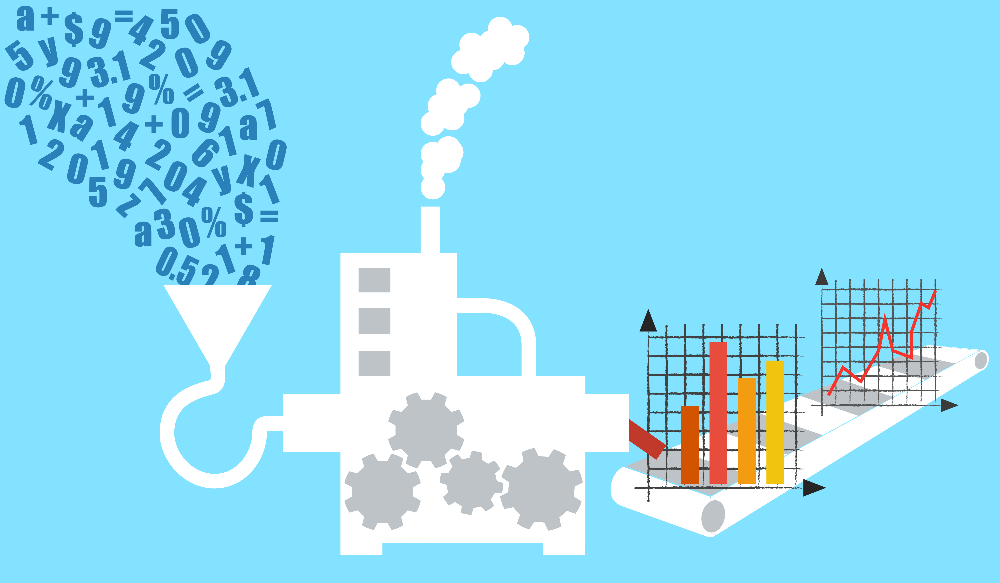

Data processing is a series of operations that use information to produce a result. Common data processing operations include validation, sorting, classification, calculation, interpretation, organization and transformation of data. The following are illustrative examples of data processing.

1. Electronics: A digital camera converts raw data from a sensor into a photo file by applying a series of algorithms based on a color model.
2. Decision Support: A stock trading application converts data representing millions of stock trades into a graph that can be quickly understood by a trader.
3. Integration: An integration process moves data from one system to another. This involves a process of transferring and transforming the format of the data.
4. Automation: A telecom billing system calculates the monthly charges for customers based on factors such as the customer's service plan and their data usage for the month. The charges are summarized as a document that is mailed to customers. The entire process is automated with a billing team monitoring it.
5. Transactions: A banking website accepts a money transfer request from a user by validating it and formatting it to be processed by a backend system.
6. Media: A website accepts user submitted media such as videos and converts it to a standard format for display to users.
7. Communication: A messaging tool encrypts a message before sending it using an encryption algorithm and a public key.
8. Artificial Intelligence: A self-driving car uses real time data from sensors to detect if there are pedestrians ahead. This is done by applying models that were developed through a process of machine learning whereby an artificial intelligence examined millions of hours of sensor data to practice detecting pedestrians.